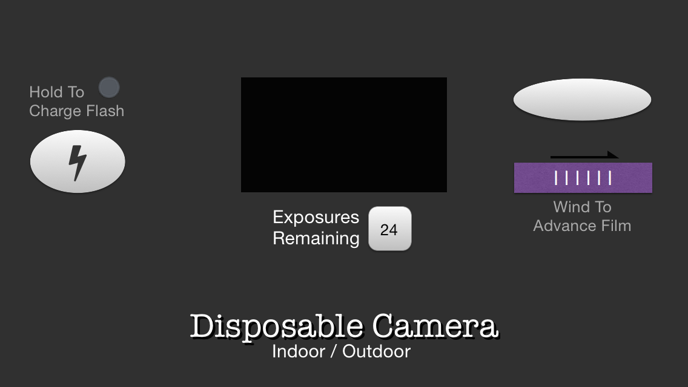

Making an app
This is a simple camera app for the iPhone, with some fun features reminiscent of the disposable cameras that were popular in the 1990's. You can download Disposable Camera on the iTunes App Store.
Check out the design here: SlapFlashCamera design